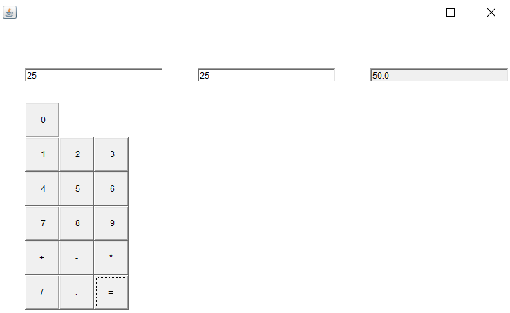

18. Create a simple AWT application design a calculator that displays buttons, TextField with GridLayout manager.
import java.awt.*;
import java.awt.event.*;
class MyFrame extends Frame {
TextField tf = new TextField();
TextField tf2 = new TextField();
TextField selectedTextField;
TextField display = new TextField();
double num1 = 0, num2 = 0, result = 0;
char operator = ' ';
MyFrame() {
setBounds(100, 100, 400, 400);
setLayout(null);
int x=0,y=0,tfw=200,tfh=20;
tf.setBounds((x+=50),(y+=100), tfw, tfh);
//System.out.println(x +" "+y);
tf2.setBounds((x+=250),(y), tfw, tfh);
display.setBounds((x+=250), (y), tfw, tfh);
// Set up independent text fields (tf and tf2)
tf.setColumns(10);
tf.setEditable(true);
add(tf);
tf2.setColumns(10);
tf2.setEditable(true);
add(tf2);
// Set up calculator display field
display.setColumns(20);
display.setEditable(false);
add(display);
// Focus listener for text fields to detect selected text field
tf.addFocusListener(new FocusAdapter() {
public void focusGained(FocusEvent e) {
selectedTextField = tf;
}
});
tf2.addFocusListener(new FocusAdapter() {
public void focusGained(FocusEvent e) {
selectedTextField = tf2;
}
});
// Create number buttons (0-9) and add them to the frame
int bx=0,by=150,w=50,h=50;
for (int i = 0; i <10; i++) {
Button btn=new Button(" "+i);
btn.setBounds((bx+=50), by, w, h);
System.out.println(bx);
add(btn);
if (i%3==0) {
by+=50;
bx=0;
}
btn.addMouseListener(new MouseAdapter() {
public void mouseClicked(MouseEvent e) {
if (selectedTextField != null) {
// Update the selected text field
selectedTextField.setText(selectedTextField.getText() + btn.getLabel().trim());
} else {
// Update the calculator display
display.setText(display.getText() + btn.getLabel().trim());
}
}
});
}
// Create operation buttons (+, -, *, /, ., =) and add them to the frame
String[] operations = {"+", "-", "*", "/", ".", "="};
int i=1;
for (String op : operations) {
Button btnop = new Button(op);
btnop.setBounds((bx+=50), by, w, h);
btnop.addActionListener(new ActionListener() {
public void actionPerformed(ActionEvent e) {
System.out.println(op);
handleOperation(op);
}
});
add(btnop);
System.out.println(i);
if(i%3==0)
{
by+=50;
bx=0;
}
i++;
}
// Close window on exit
addWindowListener(new WindowAdapter() {
public void windowClosing(WindowEvent e) {
System.exit(1);
}
});
setVisible(true);
}
// Handle operation and equals button clicks for calculator
private void handleOperation(String op) {
// System.out.println(op);
// System.out.println(tf.getText());
// System.out.println(tf2.getText());
switch (op) {
case "+": case "-": case "*": case "/":
num1 = Double.parseDouble(tf.getText());
operator = op.charAt(0);
display.setText("");
break;
case ".":
if (!display.getText().contains(".")) {
display.setText(display.getText() + ".");
}
break;
case "=":
num2 = Double.parseDouble(tf2.getText());
calculateResult();
display.setText(String.valueOf(result));
break;
}
}
private void calculateResult() {
switch (operator) {
case '+': result = num1 + num2; break;
case '-': result = num1 - num2; break;
case '*': result = num1 * num2; break;
case '/': result = num2 != 0 ? num1 / num2 : Double.POSITIVE_INFINITY; break;
}
}
}
class Main {
public static void main(String[] args) {
new MyFrame();
}
}
OUTPUT
